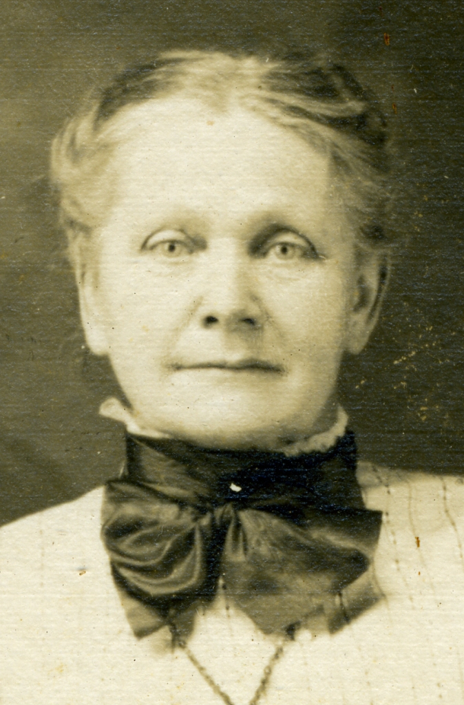

|
| 
Mary ESSLER (1851-1916) |
Mary ESSLER 1 2 3 4
IMMIGRATION: From Switzerland to United States in 1855 as a child
Michigan, Death Records, 1897-1920 Mary married Paul H. HALLER, son of John G. HALLER and Christina, in 1872 in Beaver Falls, Beaver County, Pennsylvania. (Paul H. HALLER was born on May 2, 1850 in New Bremen, Lewis County, New York, died on Nov 1, 1923 in Lowville Village, Lewis County, New York and was buried in Oak Hill Cemetery, Owosso, Shiawassee County, Michigan.) |
 General Notes:
General Notes: